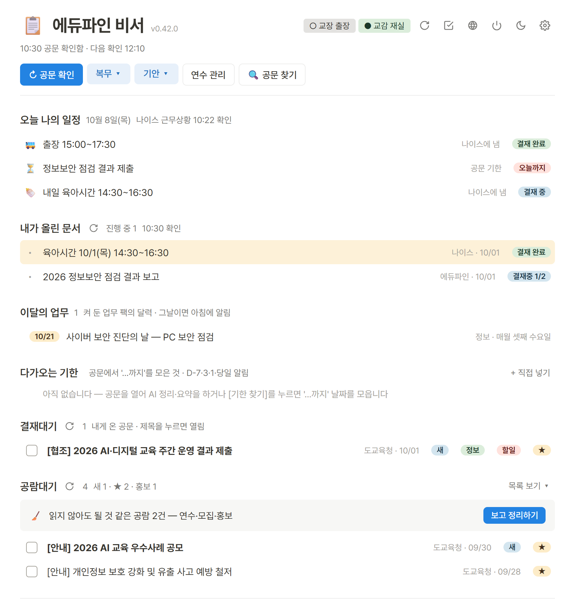
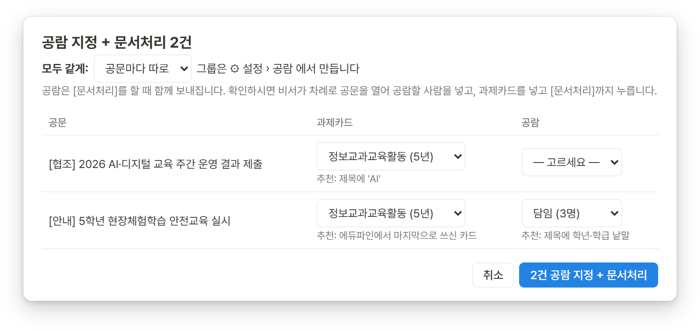
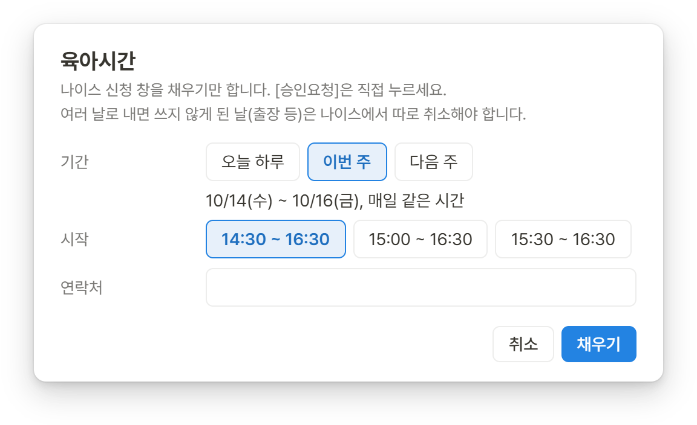
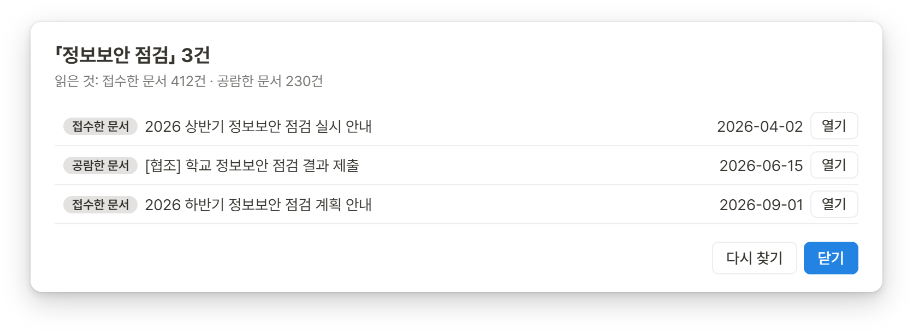
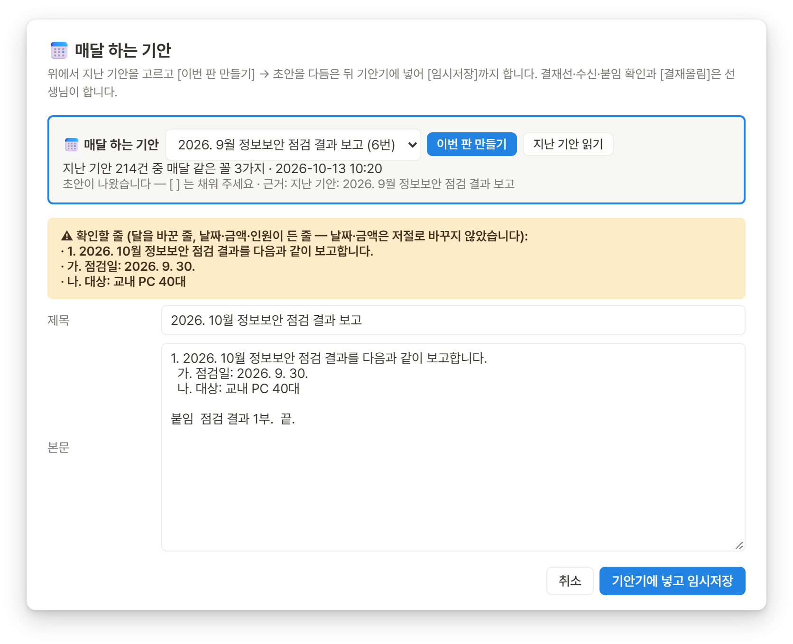
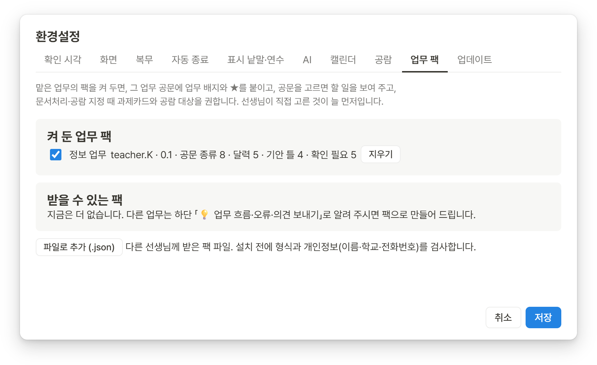

업무포털 일,
비서가 먼저 챙깁니다
결재대기·공람대기 확인, 문서처리와 공람 지정, 육아시간·출장 신청 창 채우기까지. 날마다 되풀이하는 업무포털 일을 덜어 주는 교사용 PC 프로그램입니다.
kang-t.github.io/edufine-assistant-release

켜 두기만 하면
아침에 인증서 비밀번호 한 번이면 됩니다
컴퓨터를 켜면 비서도 저절로 켜집니다. 그다음은 비서가 업무포털을 지켜보다가, 볼 것만 골라 한 화면에 모아 둡니다.
정해진 시각에 공문 확인
결재대기·공람대기를 하루 세 번(08:50·12:10·14:40) 저절로 확인합니다. 시각은 설정에서 바꿉니다.
내 업무 공문 표시
맡은 업무 공문에 ★·업무 배지·할 일을 붙이고, 공문 속 '…까지' 기한을 모아 알려 드립니다.
오늘 나의 일정
나이스 근무상황(출장·육아시간)과 내가 올린 문서의 결재 진행을 한눈에 봅니다.
수업 화면에 안 뜹니다
Chrome 은 작업 표시줄에 숨겨 두고 일합니다. 인증서 비밀번호를 넣을 때만 앞으로 나옵니다.
공람대기 정리
연수·모집·홍보처럼 읽지 않아도 될 것 같은 공람을 골라 보여 드립니다. 정리는 보고 나서 합니다.
연수 관리
나이스 연수 이력을 읽어 올해 의무연수를 다 들었는지 맞춰 봅니다.
누르면 대신 해 주는 일
여러 번 누르던 것을 한 번에
비서가 업무포털 화면을 대신 열고 채웁니다. 마지막 단추는 늘 선생님이 누릅니다.
문서처리 + 공람 지정
결재대기 공문을 여러 건 골라 한 번에 처리합니다.
- 과제카드와 공람 대상을 비서가 권합니다 — 선생님이 지난번 고른 것, 업무 팩, 제목 낱말 순서로.
- 확인 목록을 보신 뒤에야 공문을 차례로 열어 넣고 [문서처리]까지 누릅니다.
- 공람 그룹(담임, 학년 등)은 교직원 명단에서 골라 만들어 둡니다.

복무 신청 창 채우기
나이스 신청 창을 채워 두기만 합니다. [승인요청]은 선생님이 누르세요.
- 육아시간 — 오늘 하루, 이번 주, 다음 주를 한 번에.
- 조퇴·병가·출장도 같은 방식으로 채웁니다.
- 연락처는 처음 설정에 적어 둔 것으로 미리 채워집니다.

지난 공문 찾기
"작년 그 공문 어디 있더라" 할 때.
- 내 문서함의 접수한 문서와 공람완료에서 낱말로 찾습니다.
- 찾은 공문은 [열기] 한 번으로 바로 띄웁니다.

매달 하는 기안새 기능
지난 기안에서 매달 같은 꼴을 찾아 이번 달 초안을 만듭니다.
- 내 문서함 › 기안한 문서에서 되풀이되는 기안을 알아봅니다.
- 달은 바꾸고, 날짜·금액·인원이 든 줄은 '확인할 줄'로 표시합니다.
- 기안기에 넣어 [임시저장]까지. 결재선·수신·붙임 확인과 [결재올림]은 선생님이 합니다.

업무 팩
맡은 업무의 요령을 묶은 꾸러미입니다.
- 그 업무에 오는 공문 종류, 달마다 할 일, 기안 틀, 공람 대상을 담습니다.
- 처음 설정에서 「맡은 업무」를 고르면 바로 켜집니다. 그 업무 공문에 배지와 할 일이 붙고, 문서처리 때 추천이 따라옵니다.
- 팩은 비서가 저절로 새 판으로 바꿉니다. 지금은 「정보」 팩이 있습니다.

설치
세 단계면 끝납니다
관리자 권한이 필요 없습니다. 이 PC 의 이 사용자에게만 설치됩니다.
차단 해제하고 풀기
zip 파일 오른쪽 클릭 › 속성 › 맨 아래 「차단 해제」 체크 › 확인. 그다음 압축을 풉니다.
설치하고 켜기
에듀파인비서_설치_….exe › 설치 › 비서 켜기
처음에 학교 이름·근무 지역·연락처·맡은 업무를 한 번 여쭙고, 인증서 창이 뜨면 비밀번호를 넣어 로그인합니다.
지키는 것
비서는 여기까지만 합니다
공문과 복무는 선생님의 일입니다. 비서는 찾고, 열고, 채우는 데까지만 돕습니다.
비밀번호는 저장하지 않습니다
인증서 비밀번호는 아침에 선생님이 직접 넣습니다. 비서는 어디에도 적어 두지 않습니다.
마지막 단추는 선생님이
결재올림·승인요청·결재요청은 늘 선생님이 누릅니다. 문서처리도 확인 목록을 보신 뒤에만 합니다.
공문은 PC 밖으로 나가지 않습니다
공문 내용을 바깥 서버로 보내지 않습니다. AI 요약·초안(선택)도 PC 안에서 도는 로컬 AI 만 씁니다.
기록은 이 PC 에만
로그인 정보·설정·기록은 이 PC 의 선생님 사용자 폴더에만 둡니다.
자주 묻는 것
궁금한 점
어느 지역에서 쓸 수 있나요?
전북 업무포털(K-에듀파인·4세대 나이스)용입니다. 다른 시·도는 주소와 화면이 달라 아직 쓸 수 없습니다.
무엇이 있어야 하나요?
Windows 10·11 PC, Chrome, 업무포털 인증서면 됩니다. 설치에 관리자 권한은 필요 없습니다.
파란 「Windows의 PC 보호」 창은 왜 뜨나요?
새로 나온 프로그램이 돈을 내고 받는 '코드 서명 인증서' 없이 배포되면 Windows 가 한 번 더 묻는 창입니다. 바이러스가 있다는 뜻은 아닙니다.
zip 파일 속성에서 「차단 해제」를 하고 풀면 뜨지 않고, 떴다면 추가 정보 → 실행을 누르면 됩니다. 자동 업데이트 때는 뜨지 않습니다.
수업 중에 Chrome 창이 튀어나오지 않나요?
비서는 Chrome 을 작업 표시줄에 숨겨 두고 일합니다. 인증서 비밀번호를 넣어야 할 때, 그리고 선생님이 공문을 열거나 신청 창을 채우라고 할 때만 앞으로 나옵니다. 보고 싶을 때는 비서 위쪽 🌐 단추를 누르세요.
새 판은 어떻게 받나요?
켜져 있는 동안 새 판이 나오면 「업데이트할까요?」 하고 묻습니다. 업데이트를 누르면 받아 두었다가 다음에 켤 때 바뀝니다. 일하는 중에 저절로 꺼지지 않습니다.
손으로 확인하려면 ⚙ 설정 › 업데이트.
업무 팩은 어디서 받나요?
처음 설정에서 「맡은 업무」를 고르면 그 업무 팩이 켜집니다. 나중에 ⚙ 설정 › 업무 팩에서 켜고 끌 수 있습니다. 팩은 프로그램과 따로, 저절로 새 판으로 바뀝니다.
아직 팩이 없는 업무는 비서 화면 맨 아래 「💡 업무 흐름·오류·의견 보내기」로 알려 주세요.
오류가 나면 어떻게 하나요?
오류 창의 기록 복사를 누른 뒤, 비서 화면 맨 아래 「💡 업무 흐름·오류·의견 보내기」에 붙여 주세요. 고쳐서 새 판으로 내보냅니다.
지우려면 어떻게 하나요?
Windows 설정 › 앱 › 설치된 앱 › 「에듀파인 비서」 › 제거. 로그인 정보·설정·기록은 기본으로 남겨 두어, 다시 설치하면 이어서 씁니다.
교육청에서 만든 프로그램인가요?
아닙니다. 현직 교사가 만들어 무료로 나누는 개인 도우미입니다. 업무포털·K-에듀파인·나이스를 운영하는 기관과는 관계가 없습니다. 그래서 결재·승인처럼 중요한 단추는 늘 선생님이 누르도록 만들었습니다.
함께 만들기
선생님의 업무 흐름을 알려 주세요
어떤 공문이 오면 무엇을 하는지 적어 주시면, 업무 팩으로 만들어 모든 선생님 비서에 넣어 드립니다. 오류와 의견도 같은 곳에서 받습니다.